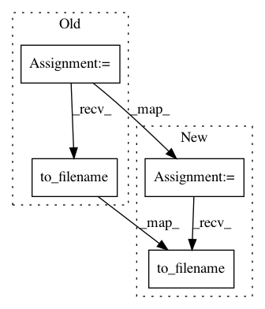

d2d840e663ef14a39ae8ebc4f17400be384a9ade,doc/examples/streamline_tools.py,,,#,26
Before Change
for_save = [(sl, None, None) for sl in lr_sf_trk]
nib.trackvis.write("lr-superiorfrontal.trk", for_save, trackvis_header)
dm_img = nib.Nifti1Image(dm.astype("int16"), hardi_img.get_affine())
dm_img.to_filename("lr-superiorfrontal-dm.nii.gz")
Since we have the streamlines in "trackvis space" lets take a moment to
consider the representation of streamlines used in dipy. Streamlines are simply
After Change
import nibabel as nib
// Save density map
dm_img = nib.Nifti1Image(dm.astype("int16"), hardi_img.get_affine())
dm_img.to_filename("lr-superiorfrontal-dm.nii.gz")
// Make a trackvis header so we can save streamlines
voxel_size = labels_img.get_header().get_zooms()
trackvis_header = nib.trackvis.empty_header()
In pattern: SUPERPATTERN
Frequency: 3
Non-data size: 4
Instances
Project Name: nipy/dipy
Commit Name: d2d840e663ef14a39ae8ebc4f17400be384a9ade
Time: 2013-12-23
Author: mrbago@gmail.com
File Name: doc/examples/streamline_tools.py
Class Name:
Method Name:
Project Name: dPys/PyNets
Commit Name: 74c014b048f6e4df6780bb767702a852b1beba1c
Time: 2020-03-05
Author: dpisner@utexas.edu
File Name: pynets/dmri/estimation.py
Class Name:
Method Name: create_anisopowermap
Project Name: nilearn/nilearn
Commit Name: c9d1557a315998f582af07dbac731b3442f6b09a
Time: 2018-03-08
Author: dkamalakarreddy@gmail.com
File Name: examples/03_connectivity/plot_rest_clustering.py
Class Name:
Method Name: